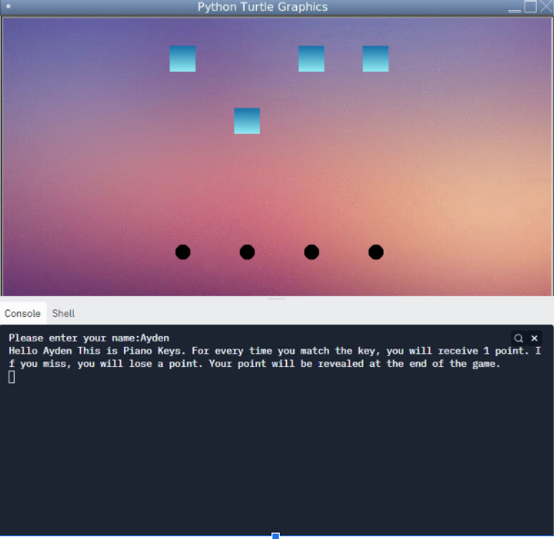
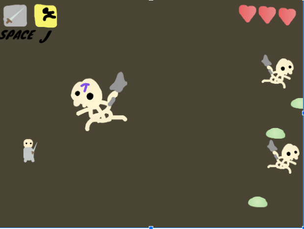

Gorilla Game: This project was to demonstrate differing turtle motion and colors. In this game, the player controls the gorilla, and controls him with the Up and Down arrow keys. Cacti move toward the gorilla, and the play will attempt to dodge them. After being hit three times, the program will end.

Piano Keys: This project displays the use of random variables. In this game, the tiles fall to the tune of Canon in D. The player presses Q, W, E, and R, and tries to capture each key on time with the song. The player will recieve 1 point on succesful captures, and lose one on faliures.
